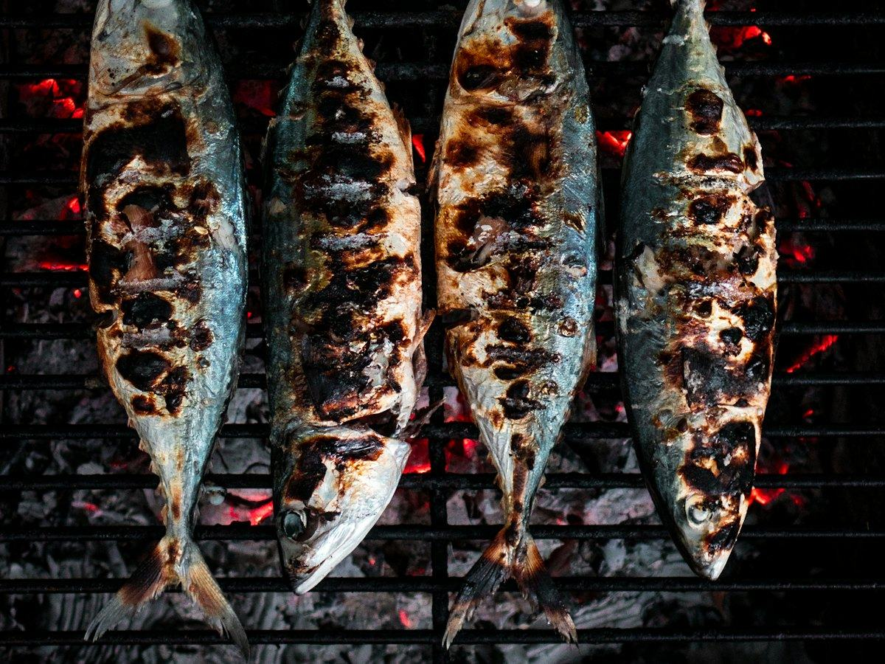
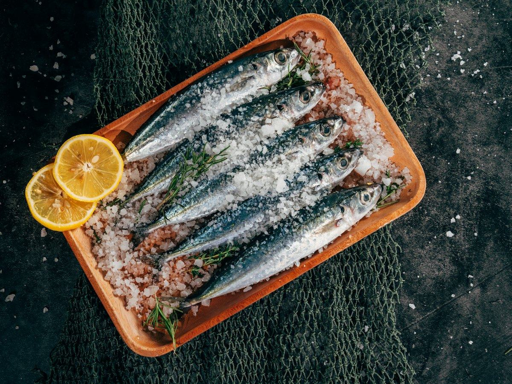
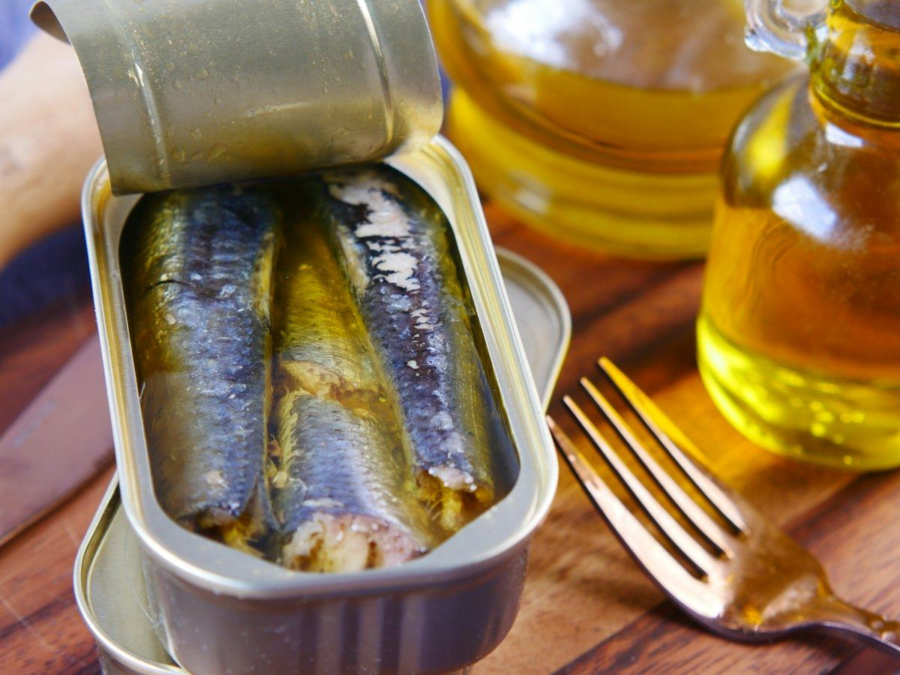
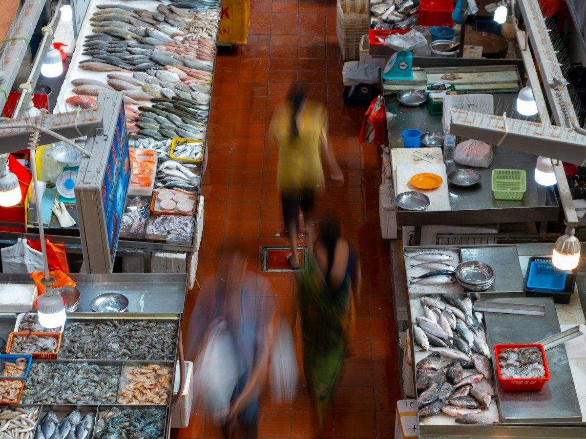

Recetas
3 recetas de salmón fáciles y saludables: al horno, en papillote y en ensalada
Salmón al horno con espárragos, en papillote con verduras y en ensalada con aguacate. Recetas fáciles con calorías, proteínas, hidratos y grasas por ración.
 Por el equipo editorial de Pombo AI
Por el equipo editorial de Pombo AI
12 nov 2026 · 6 min de lectura

España es un país de pescado, pero no siempre sabemos cuánto comer ni cuál elegir. Esto es lo que recomiendan las autoridades sanitarias españolas, explicado de forma sencilla.
La AESAN recomienda comer pescado varias veces por semana por sus efectos beneficiosos para la salud y lo considera una pieza fundamental de la dieta mediterránea. Además de proteína de calidad, el pescado aporta vitamina D, yodo y selenio, según recoge la Federación Española de Sociedades de Nutrición (FESNAD), que resume que los beneficios de comerlo superan los riesgos potenciales.

Las recomendaciones dietéticas de la AESAN de 2022 proponen 3 o más raciones de pescado a la semana, priorizando el pescado azul (sardinas, boquerones, caballa, jurel) y las especies con menor impacto ambiental. Según el resumen de la OCU, una ración son 125 a 150 g.
Las recomendaciones anteriores sobre mercurio hablaban de 3 a 4 raciones a la semana, variando entre pescado blanco y azul. En la práctica, el mensaje es el mismo: pescado varias veces por semana y variado.
| Por cada 100 g | kcal | Proteínas | Grasas |
|---|---|---|---|
| Bacalao atlántico (crudo) | 82 | 17.8 g | 0.7 g |
| Salmón atlántico de piscifactoría (crudo) | 208 | 20.4 g | 13.4 g |
| Sardinas en conserva en aceite, escurridas | 208 | 24.6 g | 11.5 g |
| Atún claro al natural, escurrido | 116 | 25.5 g | 0.8 g |
Datos: USDA FoodData Central, SR Legacy.

La AESAN actualizó en 2019 sus recomendaciones por el mercurio. Las embarazadas, las mujeres que planean estarlo o en lactancia y los niños de 0 a 10 años deben evitar el pez espada o emperador, el tiburón, el atún rojo y el lucio, pero mantener 3 o 4 raciones a la semana de especies con contenido bajo o medio. Los niños de 10 a 14 años deben limitar esas cuatro especies a 120 g al mes.
Para el resto de la población no hay restricciones especiales: la recomendación es comer pescado variado. Las conservas de atún, por ejemplo, no se hacen con atún rojo.

¿Cuánto comes de verdad?
Con Pombo AI haces una foto a tu plato y la inteligencia artificial estima calorías, proteínas, hidratos y grasas en segundos. Es una estimación orientativa, no un dato médico.
Las recomendaciones dietéticas de la AESAN de 2022 proponen 3 o más raciones de pescado a la semana, priorizando el pescado azul. Una ración son 125 a 150 g.
Por su alto contenido en mercurio, la AESAN recomienda que las embarazadas, las mujeres que planean estarlo o en lactancia y los niños de 0 a 10 años eviten el pez espada o emperador, el tiburón, el atún rojo y el lucio. Los niños de 10 a 14 años deben limitarlos a 120 g al mes.
Las conservas de atún no se hacen con atún rojo, que es la especie con más mercurio, así que según Consumer los niños pueden comer atún en lata dentro de las 3 o 4 raciones semanales de pescado de contenido bajo o medio.
Aviso: Este artículo es informativo y no sustituye el consejo de un médico o dietista-nutricionista. Si tienes una enfermedad, tomas medicación, estás embarazada o has tenido un trastorno de la conducta alimentaria, consulta con un profesional antes de cambiar tu alimentación.
Salmón al horno con espárragos, en papillote con verduras y en ensalada con aguacate. Recetas fáciles con calorías, proteínas, hidratos y grasas por ración.
Merluza a la gallega, al horno con pimientos y a la plancha con verduras. Tres recetas de pescado blanco con su información nutricional.
Ensalada de pasta integral con atún, tostada de atún y aguacate y tomates rellenos. Recetas fáciles con su información nutricional.